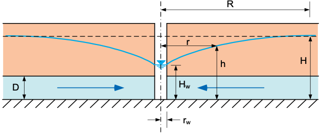
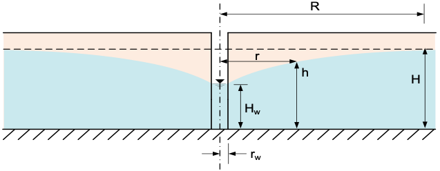

Exercise - Well Equations
Part 1 - Radius of Influence
The radius of influence of a well is the distance from the well at which the drawdown is negligible. The radius of influence can be estimated using the following equations:
| Name | Type | Equation |
|---|---|---|
| Lembke | Semi-Empirical | \(R = H\sqrt{\frac{k}{2N}}\) |
| Weber | Semi-Empirical | \(R = 2.45\sqrt{\frac{Hkt}{n_e}}\) |
| Kusakin | Semi-Empirical | \(R = 1.9\sqrt{\frac{Hkt}{n_e}}\) |
| Siechardt | Empirical | \(R = 3000s_w\sqrt{k}\) |
| Kusakin | Empirical | \(R = 575s_w\sqrt{\frac{H}{k}}\) |
Where:
H = initial thickness (B for confined aquifers, h for unconfined aquifers) [m]
k = hydraulic conductivity [m/sec]
\(s_w\) = drawdown at the well [m]
\(n_e\) = effective porosity (storativity S, for confined) [-]
t = time since pumping began [sec]
N = accretion from rainfall [m/sec]
The following spreadsheet a sample set of calculations for each of the equations above.
Excel file: radius_of_influence.xlsx
Part 2 - Confined Aquifer
In this exercise, you will calculate the water level at the center of the well and as a function of distance from the well for a confined aquifer.

The following equations can be used to calculate the head (h) as a function of distance (x) from the well:
Where:
h = head [L]
H = initial head prior to pumping [L]
q = flow rate [L³/T]
k = hydraulic conductivity [L/T]
D = thickness of the confined aquifer [L]
r = distance from the well [L]
R = radius of influence of the well [L]
Assume the following values for the confined aquifer:
| Parameter | Value | Units |
|---|---|---|
| H | 50 | m |
| Q | 0.2 | m³/s |
| k | 1e-3 | m/s |
| D | 15 | m |
| R | 500 | m |
| \(r_w\) | 0.1 | m |
a) Calculate the head at the center of the well (r = \(r_w\)).
b) Let r vary from rw to R. Calculate and plot the head as a function of distance (r) from the well.
Excel starter file: confined.xlsx
Excel solution file: confined_KEY.xlsx
Python starter file: 
Python solution file: 
Part 3 - Unconfined Aquifer
In this exercise, you will calculate the water level at the center of the well and as a function of distance from the well for an unconfined aquifer.

The following equations can be used to calculate the head (h) as a function of distance (x) from the well:
Where:
h = head [L]
H = initial head prior to pumping [L]
q = flow rate [L³/T]
R = radius of influence of the well [L]
r = distance from the well [L]
k = hydraulic conductivity [L/T]
Assume the following values for the unconfined aquifer:
| Parameter | Value | Units |
|---|---|---|
| Q | 0.2 | m³/s |
| k | 1 | cm/s |
| H | 50 | m |
| R | 500 | m |
| \(r_w\) | 0.1 | m |
a) Calculate the head at the center of the well (r = \(r_w\)).
b) Let r vary from rw to R. Calculate and plot the head as a function of distance (r) from the well.
Excel starter file: unconfined.xlsx
Excel solution file: unconfined_KEY.xlsx
Python starter file: 
Python solution file: